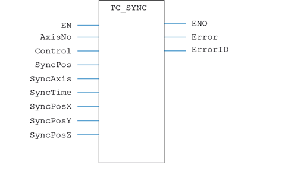
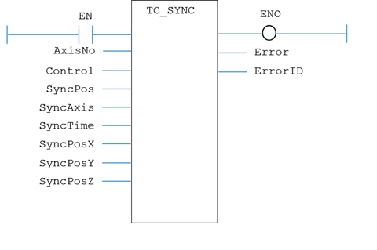

Motion Function
Issues a new SYNC motion request for the axes specified by 'AxisNo'.
|
EN : BOOL; |
Set TRUE to enable the function |
|
AxisNo : USINT; |
Axis number |
|
Control : USINT; |
Control value |
|
SyncPos : LINT; |
Sync Position |
|
SyncAxis : USINT; |
Master axis to follow |
|
SyncTime : DINT; |
Time duration for axes to become synchronised |
|
SyncPosX : LINT; |
Synchronisation position X |
|
SyncPosY : LINT; |
Synchronisation position Y |
|
SyncPosZ : LINT; |
Synchronisation position Z |
|
ENO : BOOL; |
TRUE if function is enabled |
|
Error : BOOL; |
TRUE if a program error is detected |
|
ErrorID : UINT; |
Returned error number |
When the EN input is TRUE, the function block applies the command to the axis indicated by AxisNo.
A programming error, such as parameter out of range, will set the Error output and return an error ID number. For the Error ID reference, see the Trio Programming error list.
MyTC_Sync(EN, AxisNo, Control, SyncPos, SyncAxis, SyncTime, SyncPosX, SyncPosY, SyncPosZ);
ENO := MyTC_Sync.ENO;
Error := MyTC_Sync.Error;
ErrorID := MyTC_Sync.ErrorID;

